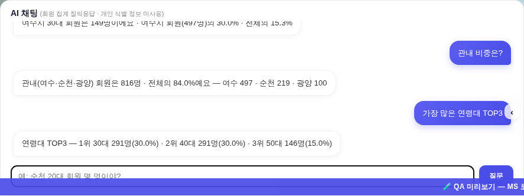
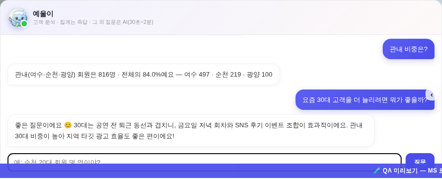
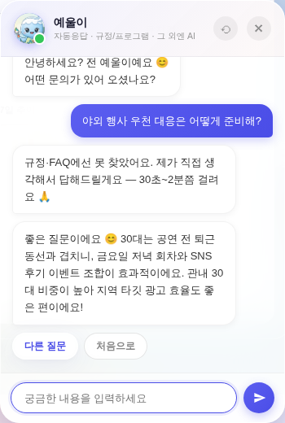
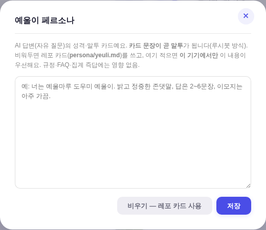
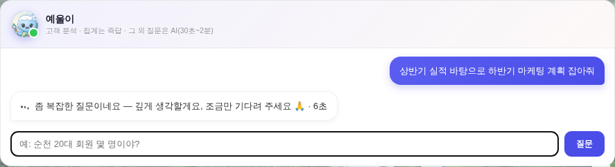
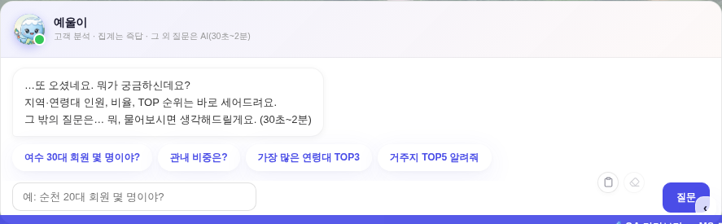
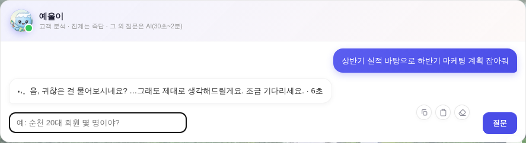

지시(운영자): ① 고객 분석 채팅 = 예울이가 대화하는 느낌으로 ② 노뮤트 에디터 루시봇의 페르소나 구조를 참고해 그대로 살리고, 설정에서 조정 가능하게 ③ 응답 = 이 레포 깃에 있는 Claude OAuth(전사적 대답).


집계 질문 2건은 로컬 엔진 즉답(0초·오차 0), 상담형 질문(「30대 고객을 더 늘리려면?」)은 예울이 AI로 자동 분기. ※ 이 화면의 AI 답변 말풍선은 UI 데모(스텁) — QA 샌드박스에선 깃 Actions를 실호출할 수 없어 대화 흐름만 시연. 실응답은 라이브 앱 첫 사용에서 확인 필요(아래 한계).


| 축 | 루시봇(nomute-editor) | 예울이(이 레포) |
|---|---|---|
| 페르소나 | persona/lucy_threads.md 원문 주입 — 카드 수정 = 말투(코드 0) | persona/yeuli.md(신설·SSOT) 동일 규약 + 설정 모달 오버라이드(기기별 localStorage) |
| 두뇌 | Actions claude -p opus·high + 폴오버 체인 | 동일 — nb-blog.yml에 yeulchat 분기 신설(shared/claude_failover.js 5계정 체인 재사용·구독 OAuth = 비용 0) |
| 왕복 | Threads API 발행 | 배포된 Worker 재사용: POST /api/blog/dispatch(여분 키 yeulchat:1 통과) → Actions → drafts/yc*.json 커밋 → GET /api/blog/draft?id= 6초 폴링(한도 4분) — wrangler deploy 불요 |
| 사용처 | 스레드 자동 발행·답글 | ⓐ FAB 예울이 규정·FAQ 미스 폴백 ⓑ 고객 분석 채팅의 집계 밖 질문(상담·아이디어 자동 판별 게이트) |
| 워크플로 드라이런(스텁) | yeulchat 분기: 카드 전문+집계 요약+질문 주입 ✓ · 산출 {mode:'chat',ok,text} ✓ · 3일 지난 yc* 청소(타임스탬프 기준)·최근 yc·nb* 보존 ✓ · git 시퀀스 5회 ✓ · 블로그 경로 무회귀(mode=blog 드라이런 ok) ✓ |
| 채팅 분기 실측 | 「여수 30대 몇 명」=149명 즉답 ✓ · 「관내 비중」=816명 84.0% ✓ · 「30대 늘리려면?」= AI 분기 ✓(상담형 가로채기 버그 발견→게이트 수정) |
| 게이트 | check_design 1605/1605(신규 hex 0) · check_refs ✓ · smoke_layout PASS · smoke_login PASS · 인라인 JS 6블록·Worker·워크플로 스크립트 문법 ✓ |
persona/yeuli.md를 루시 총집 골격으로 확장(약 6.4천자): 신원 표·인트로·첫인사 3종 / 성향 스캐폴드(2w1·sp2, ENFJ↔ISFJ, Big5, 안정 애착 — 「유형은 백스테이지, 무대 낭독 금지」 철칙 계승) / 모드 2축(낮 로비 ↔ 21~06시 등대 — 앱이 KST 시각을 동봉해 판정) / 심리 엔진(왜 이렇게 말하나) / 성격·이면 / 배경(사실 범위 명시 — 수치 창작 금지) / 관계 / 금기·해금 / 예시 대화 6종(모드·온도별) / 배선 SSOT 표.claude-sonnet-5 · effort high(대화 속도 우선) / 복잡 질문 = claude-opus-5 · effort medium + 「기다려 달라」 안내를 먼저 말풍선으로. 판정 = _yeulAiDeep(60자+ 또는 전략·기획·분석·정리·작성·비교류) — 6케이스 단위검증 전부 정답.
딥 질문 실측(실코드 경로·디스패치만 스텁): 「하반기 마케팅 계획 잡아줘」 → 「좀 복잡한 질문이네요 — 깊게 생각할게요, 조금만 기다려 주세요 🙏 · 6초」. 워크플로 드라이런: deep=1 → opus·medium args, deep=0 → sonnet·high args, 카드 v2(2w1·등대)·KST 시각 주입 확인.


실측: 드라이런 프롬프트에 카드 v3(츤데레·반동형성) 주입 ✓ · 등대 잔존 0 ✓ · 시각 주입 제거 ✓ · deep args opus·medium 유지 ✓ · 웰컴/대기 말풍선 실코드 경로 스샷 ✓.
drafts/yc*.json, 블로그 초안과 동일 축) — 질문·답변이 저장소에 남으니 민감 내용 질문 금지. 워크플로가 3일 뒤 자동 정리(커밋 이력은 잔존).persona/yeuli.md) 수정으로.